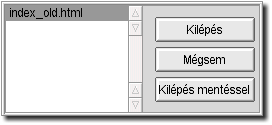

|
|
![[ Globe Webeditor Ismertetõ ]](pic/top_hu_01.jpg) |
| |
Állandó ikonmenü | Kiegészítõ ikonmenük | Szerkesztõfelület | Egyéb
Szöveges menü
Ebben a részben felsoroljuk, hogy a felsõ menüsorból milyen funkciókat lehet elérni. A funkciókat aszerint csoportosítjuk, ahogyan azokat el lehet érni.
Fájl:
| Új: |
Új dokumentumot tudsz létrehozni. A szerkesztõablakban egy üres, "névtelen" fájlt hoz létre.
|
| Megnyitás: |
Már létezõ, szerkeszteni kívánt fájlt tudsz vele megnyitni.
|
| Mentés: |
Szerkesztett dokumentum mentése
|
| Mentés más néven: |
Szerkesztett fájl mentése átnevezéssel
|
| Összes fájl mentése: |
Valamennyi nyitva lévõ dokumentumodat mentheted. Amennyiben a nyitva lévõ fájlok még névtelenek,
úgy minden egyes fájlnál felajánlja neked a Globe az elnevezés lehetõségét.
|
| Bezárás: |
Az aktuálisan szerkesztett dokumentumodat zárhatod be vele. Amennyiben több fájlod van egyszerre, úgy a
szerkesztõablak alján látható listában éppen vastag betûkkel szedett fájl név az aktuális fájl.
Ha a bezárni kívánt fájlon módosításokat eszközöltél és még nem mentetted el a változásokat, akkor a Globe figyelmeztet erre.
Ekkor eldöntheted, hogy bezárod a fájlt
[ Bezárás, ekkor nem menti a Globe a változásokat ],
visszatérsz a szerkesztéshez a Mégsem gomb megnyomásával, vagy
a Bezárás mentéssel lehetõséget választod és ekkor a fájlon történt változtatások mentését követõen a Globe bezárja a fájlt.
|
| Kilépés: |
A programból való kilépésre szolgál
Ha a bezárni kívánt fájlon módosításokat eszközöltél és még nem mentetted el a változásokat, akkor a Globe figyelmeztet erre.

Ekkor eldöntheted, hogy bezárod a fájlt
[ Kilépés, ekkor nem menti a Globe a változásokat ],
visszatérsz a szerkesztéshez a Mégsem gomb megnyomásával, vagy
a Kilépés mentéssel lehetõséget választod és ekkor a fájlon történt változtatások mentését követõen a Globe is bezáródik.
|
Szerkesztés:
| Visszavonás: |
Tulajdonképpen az "Undo" utasítás, másodszori megnyomása a "visszavonás visszavonását"
eredményezi.
|
| Kivágás: |
Az általad kijelölt szöveg, vagy kódrészletet vágja ki a szerkesztett anyagból. Az így kivágott
anyag a vágólapra kerül és onnan vissza is tudod tenni a beillesztés utasítással, illetve az annak megfelelõ billentyûzet paranccsal.
|
| Másolás: |
A kijelölt szöveget a vágólapra helyezi az utasítás, úgy, hogy a kijelölt szöveg, vagy kódrészlet az
eredeti helyén marad. A másolt szövegrész bármely szerkesztett dokumentumba beilleszthetõ. A Kivágás és Másolás utasítások esetén fontos tudni, hogy a kivágott, vagy másolt anyagot a következõ
ugyanilyen utasítás felülírja.
|
| Beillesztés: |
A vágólap tartalmát helyezi el az aktuális kurzorpozíciótól kezdõdõen.
|
| Mindet kijelöl: |
Az aktuális dokumentum teljes egészét kijelöli.
|
Beállítások:
| Nézet: |
Három fõ részre tagolódik. Nézet, Kódolás, Tulajdonságok.
- Nézet:
A képen a Bal menü is ki van kapcsolva
![[ Sorszám bekapcsolva ]](pic/numview_on.gif)
Sorszámozás bekapcsolva
![[ Sorszám kikapcsolva ]](pic/numview_off.gif)
Sorszámozás kikapcsolva
- Kódolás:
A szerkesztett szöveg karakterkódolásának beállítását szolgálja. A BeOS -ban megtalálható szövegkódolás alapján dolgozik. Alapértelmezett szövegkódolásként az ISO-8859-2 van beállítva.
![[ Karakter kódolás ]](pic/character_coding.gif)
- Tulajdonságok:
A Globe felhasználói beállításait tudod módosítani benne. Ezek:
![[ Font és Fájltípus beállítás ]](pic/preferences_window2_hu.gif)
![[ Nyelv beállítás ]](pic/preferences_window3_hu.gif)
|
Súgó:
Állandó ikonmenü | Kiegészítõ ikonmenük | Szerkesztõfelület | Egyéb
Ugrás a lap tetejére
© RoGer & kesigomu 2002
Minden jog fenntartva!
Hungarian BeOS Users Group |
|
|
![[ Globe Webeditor ]](pic/menu_top.jpg)
![[ Ismertetõ ]](pic/menu_hu_01.jpg)
![[ Segédlet ]](pic/menu_hu_02.jpg)
![[ Elõzmény ]](pic/menu_hu_03.jpg)
![[ Letöltés ]](pic/menu_hu_04.jpg)
![[ Képek ]](pic/menu_hu_05.jpg)
![[ Fórum ]](pic/menu_hu_06.jpg)
![[ Kapcsolat ]](pic/menu_hu_07.jpg)
![[ Bottom ]](pic/menu_bottom.jpg)